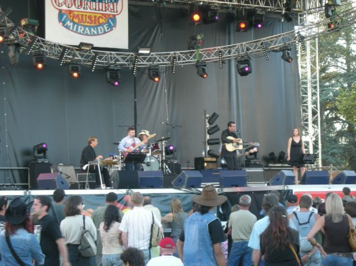
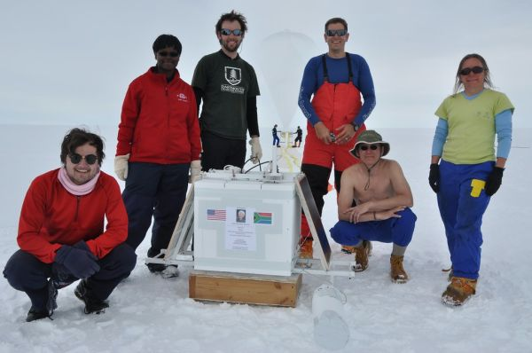

Zu diesem Thema gibt es gerade nichts.
Heute23


Sport DE
Champions League: Serhou Guirassy schießt Borussia Dortmund in Aserbaidschan aus der Ergebniskrise
Quelle: Spiegel · 20. Oktober 2026 Bild: Fuzzy Gerdes · BY 2.0

Tiere & Natur DE
Weltweite Expansion: Ob Krawalle oder Blut: Die NFL-Show in Paris muss weitergehen
Quelle: ntv · 20. Oktober 2026 Bild: Floortje Walraven · BY 2.0


Gesellschaft EN
Student Plays Truly Epic Birthday Prank on High School Principal Who Changed His Life (WATCH)
Quelle: Good News Network · 20. Oktober 2026 Bild: Foxcroft Academy · BY 2.0


Sport DE
Prognose angepasst: Adidas meldet Rekord-Quartal
Quelle: ntv · 20. Oktober 2026 Bild: Hopeless_Wonderer · BY-SA 2.0

Gesellschaft DE
Nach Bulgariens Hilferuf: USA lassen Seeaufklärer über Schwarzem Meer kreisen
Quelle: ntv · 20. Oktober 2026 Bild: Carrotflower Productions International · BY-SA 2.0

Gesellschaft EN
Isle of Jersey Expands Marine Protections to Cover 21% of Territorial Waters
Quelle: Good News Network · 20. Oktober 2026 Illustration

Tiere & Natur DE
COP17 in Armenien: Dresdner Forscher hoffen auf Fortschritte im Naturschutz
Quelle: MDR Aktuell · 20. Oktober 2026 Bild: USFWS Mountain Prairie · BY 2.0

Wissenschaft & Technik DE
Wärmepumpe: WWF-Studie zeigt, wann sich die Investition wirklich lohnt

Sport DE
Joy-Lance Mickels: Der Deutsche, den der BVB am Toreschießen hindern muss
Quelle: Spiegel · 20. Oktober 2026 Bild: Hopeless_Wonderer · BY-SA 2.0
Gesellschaft EN
Texas Man Finds More Than $128,000 on Top of a Bank’s ATM–and Returns Every Dollar
Quelle: Good News Network · 20. Oktober 2026 Illustration

Gesellschaft DE
Neuer Reaktorblock am Netz: Slowakei überholt Frankreich beim Atomstrom
Quelle: Tagesschau · 20. Oktober 2026 Bild: OakleyOriginals · BY 2.0

Kultur DE
AfD-BSW-Zusammenarbeit: AfD will Kooperation schriftlich regeln
Quelle: MDR Aktuell · 20. Oktober 2026 Bild: oatsy40 · BY 2.0
Gesellschaft EN
Man Proposes to His Girlfriend After They Were Struck by Lightning–She Restarted His Heart Twice
Quelle: Good News Network · 20. Oktober 2026 Illustration

Wissenschaft & Technik DE
Europride kommt 2029 nach Dresden, Solarzellen auf Lkw-Dächern sparen Sprit und Strom, neue Technik macht Gedanken hörbar
Quelle: goodnews.eu · 20. Oktober 2026 Bild: UnitedSoybeanBoard · BY 2.0

Gesundheit DE
Neuer Therapieansatz gegen Lungeninfektionen
Quelle: Good News Magazin · 20. Oktober 2026 Bild: TheNoxid · BY 2.0

Tiere & Natur EN
The new certification scheme helping solar farms become havens for wildlife
Quelle: Positive News · 20. Oktober 2026 Illustration

Wirtschaft & Arbeit EN
A Dutch startup is making concrete that grows its own moss
Quelle: Optimist Daily · 20. Oktober 2026 Bild: Amsterdam free photos & pictures of the Dutch city · CC0 1.0

Kultur EN
The surprising history of pumpkins: from ancient staple to autumn icon
Quelle: Optimist Daily · 20. Oktober 2026 Illustration
Gestern8

Gesellschaft DE
XY-Preis für Zivilcourage: Zwei Frauen aus der Region Trier ausgezeichnet
Quelle: SWR Aktuell · 19. Oktober 2026 Bild: Bruno_Caimi · BY 2.0

Kultur DE
Bundesregierung vereinbart KI-Kooperation mit Nvidia
Quelle: Tagesschau · 19. Oktober 2026 Bild: Jamiecat * · BY 2.0
Tiere & Natur EN
Mozambique Protects the ‘Butterfly Forest’ of Mount Mabu, Home to 200 Species
Quelle: Good News Network · 19. Oktober 2026 Illustration
Kultur EN
Unprecedented Collab Between China and The Met Uncovers Secrets of Huge Chinese Mural in NYC
Quelle: Good News Network · 19. Oktober 2026 Illustration

Gesellschaft DE
New York City will Pferdekutschen bis 2028 abschaffen, die Spitzenreiter beim ÖPNV, historischer Tiefstand bei Amazonas-Abholzung
Quelle: goodnews.eu · 19. Oktober 2026 Bild: katerha · BY 2.0

Tiere & Natur EN
A Wall Meant to Divide Is Uniting Left and Right in Texas
Quelle: Reasons to be Cheerful · 19. Oktober 2026 Bild: Bernt Rostad · BY 2.0

Tiere & Natur EN
Volunteers became salmon, deer and earthworms. Then they set out to save their river
Quelle: Positive News · 19. Oktober 2026 Bild: U. S. Fish and Wildlife Service - Northeast Region · PDM 1.0
Umwelt & Klima EN
How one small device is solving the apartment solar access problem
Quelle: Optimist Daily · 19. Oktober 2026 Bild: seier+seier · BY 2.0
Diese Woche14

Gesundheit DE
Gut für Körper und Geist: 8 gute Nachrichten
Quelle: goodnews.eu · 17. Oktober 2026 Bild: TheNoxid · BY 2.0

Gesellschaft DE
Drogenabhängige erhalten in Portugal keine Strafe, sondern Unterstützung
Quelle: Good News Magazin · 17. Oktober 2026 Bild: Håkan Dahlström · BY 2.0

Gesundheit DE
Kostenloses Brustkrebs-Screening für Frauen ab 45 Jahren, neues Zentrum in Berlin erforscht Wege zur HIV-Heilung, Natur hilft gegen Einsamkeit
Quelle: goodnews.eu · 16. Oktober 2026 Bild: TheNoxid · BY 2.0

Tiere & Natur DE
New York plant Ende der Pferdekutschen im Central Park
Quelle: Good News Magazin · 16. Oktober 2026 Bild: Nithi clicks · BY 2.0
Tiere & Natur EN
What went right this week: the good news that matters
Quelle: Positive News · 16. Oktober 2026 Illustration

Gesellschaft EN
What sets Japanese sweet potatoes apart, nutritionally speaking
Quelle: Optimist Daily · 16. Oktober 2026 Bild: 1lenore · BY 2.0

Gesellschaft DE
Brasilien schafft Sechs-Tage-Woche ab, Deutschland verbraucht nur noch halb so viel Kohle wie vor zehn Jahren, Paris baut Hunderte Kilometer neue Radwege
Quelle: goodnews.eu · 15. Oktober 2026 Bild: tec_estromberg · BY 2.0

Gesellschaft EN
The Library Is Closed. Feel Free to Come In.
Quelle: Reasons to be Cheerful · 15. Oktober 2026 Bild: ell brown · BY 2.0
Kultur EN
In Ukraine, the repair movement is heading underground
Quelle: Positive News · 15. Oktober 2026 Illustration

Umwelt & Klima EN
6 smart things to do with an empty egg carton before you toss it in the recycling bin
Quelle: Optimist Daily · 15. Oktober 2026 Illustration

Gesellschaft DE
Ungarn hebt Verbot von queeren Inhalten für Minderjährige auf, Zuckersteuer soll Getränke gesünder machen, Wien bekommt PAIS-Ambulanz
Quelle: goodnews.eu · 14. Oktober 2026 Bild: NASA Goddard Photo and Video · BY 2.0
Gesellschaft EN
Teenagers Worldwide Are Tackling the Plastics Crisis
Quelle: Reasons to be Cheerful · 14. Oktober 2026 Illustration

Tiere & Natur EN
Wildlife photographer of the year 2026, the winning images
Quelle: Positive News · 14. Oktober 2026 Bild: U.S. Geological Survey · CC0 1.0

Gesellschaft EN
The ‘in awe’ artist painting a wilder Britain
Quelle: Positive News · 13. Oktober 2026 Bild: ell brown · BY 2.0
Älter2
Gesellschaft EN
Can Students and Teachers Learn to Trust Each Other in the Age of A.I.?
Quelle: Reasons to be Cheerful · 12. Oktober 2026 Illustration

Gesellschaft EN
How NYC Students Saved School Lunch
Quelle: Reasons to be Cheerful · 8. Oktober 2026 Bild: John Englart (Takver) · BY-SA 2.0